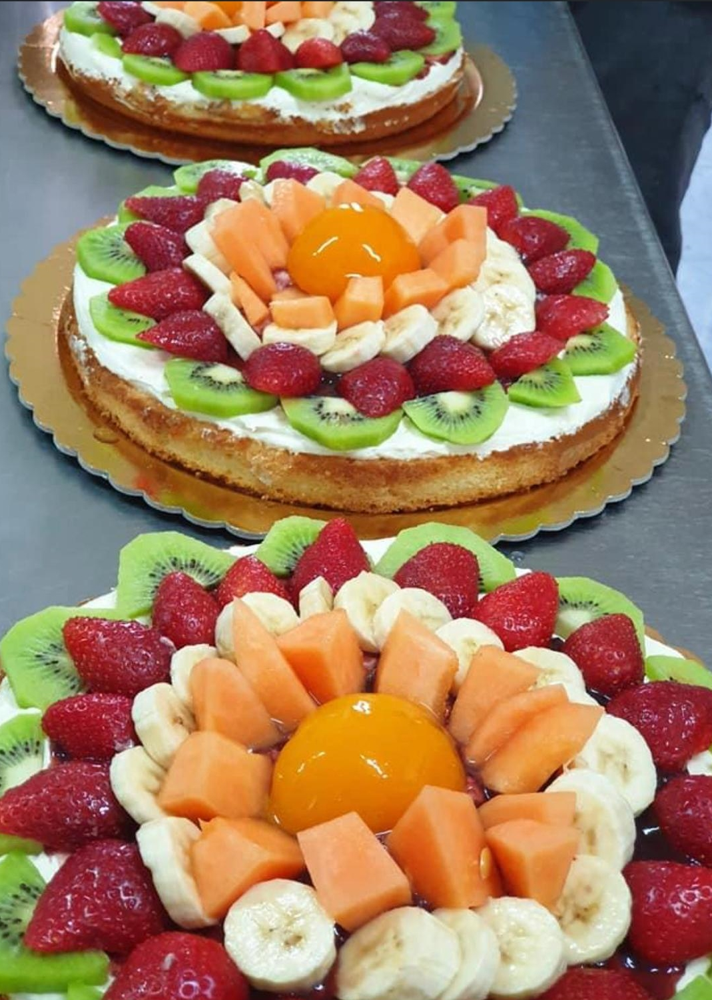

Chi siamo?
La pasticceria Sweet Garden nasce a Teano (Ce) nel lontano 1989, dal pasticcere Fiato Raffaele. Sweet Garden offre un tipo di pasticceria classica ma nello stesso tempo del tutto artigianale, delicata e raffinita, inoltre produciamo tutti i tipi di dolci natalizi e pasquali, nei mesi estivi potrete trovare una vasta scelta di gelati naturalmente prodotti da noi
